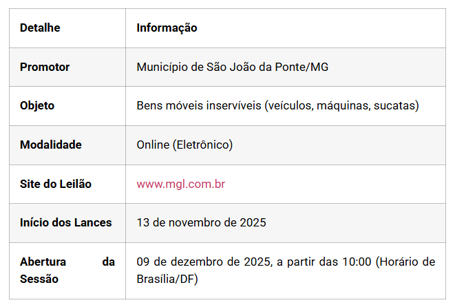

Leilão Online da Prefeitura de São João da Ponte/MG Oferece Bens Móveis Inservíveis
Publicado em: 09 de dezembro de 2025
A Prefeitura Municipal de São João da Ponte, em Minas Gerais, anunciou a realização de um Leilão Online de bens móveis inservíveis, incluindo veículos, máquinas e sucatas. O certame, regido pelo Edital nº 60/2025, visa a venda dos bens no estado em que se encontram, pelo critério de maior lance, igual ou superior ao valor da avaliação prévia.
Detalhes Essenciais do Leilão

Condições de Participação e Visitação
Podem participar do leilão pessoas físicas maiores ou emancipadas e pessoas jurídicas. É importante notar que, para a arrematação de veículos considerados SUCATA, a participação é restrita a pessoas jurídicas credenciadas para desmontagem e reciclagem, conforme a Resolução nº 611/2016 do CONTRAN.
Os interessados devem realizar o cadastro prévio no portal do leiloeiro (www.mgl.com.br) para serem habilitados.
Visitação dos Bens
A visitação dos lotes é altamente recomendada, pois os bens serão vendidos sem garantia e no estado de conservação em que se encontram. Período de Visitação: 01 a 05 de dezembro de 2025 (dias úteis), das 08:00 às 11:00 e das 13:00 às 16:00. Local dos Veículos e Máquinas: R. José Aurélio Fagundes, S/N, saída para Varzelândia / Oficina da Prefeitura de São João da Ponte, MG. Local das Sucatas: Rua Eugênio Bento de Almeida, S/N, Bairro Colinas, no Galpão Fábrica de Bloquete. Contato para Informações: Elton de Jesus Gomes Viera – (38) 99129-9851.
Pagamento e Responsabilidades
O pagamento dos lotes arrematados deverá ser feito à vista, por meio de depósito bancário em conta a ser informada pelo Leiloeiro, no prazo de 03 dias. Além do valor do lance, o arrematante deverá pagar a comissão do leiloeiro, no importe de 5% sobre o valor da arrematação. O edital ressalta que todas as despesas relativas a multas, impostos (como IPVA), taxas e a regularização de documentos de veículos (incluindo a obtenção de segunda via de CRV/CRLV, se necessário) são de responsabilidade exclusiva do arrematante. Em caso de desistência ou não pagamento, o arrematante estará sujeito a multas de 15% do valor do lance vencedor para o Contratante e 5% para o Leiloeiro, além das sanções previstas na Lei nº 14.133/2021. Para mais detalhes sobre os bens e as regras completas, os interessados devem consultar o Edital de Leilão Nº 60/2025 na íntegra no link :
https://www.saojoaodaponte.mg.gov.br/wp-content/uploads/2025/11/EDITAL-DE-LEILAO-online-bens-moveis.pdf